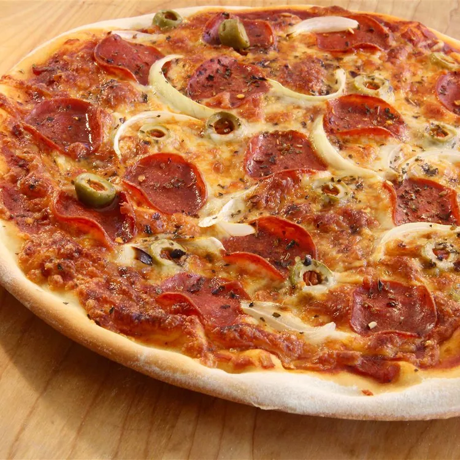

Recipe

Thin crust pizza, such as New York style pizza dough, is much thinner, and usually the same width from the crust to the very edge of the pizza slices
Ingredients:
- Yeast: This thin crust pizza dough starts with one teaspoon of active dry yeast.
- Sugar and water: Activate the yeast in white sugar and lukewarm water.
- Flour: This crispy thin crust calls for all-purpose flour instead of bread flour
- Salt: Salt tightens the gluten structure, which strengthens the dough and makes it more elastic.
Steps:
- Activate the yeast with sugar and water.
- Make the dough.
- Knead the dough.
- Roll the dough into a circle.